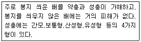
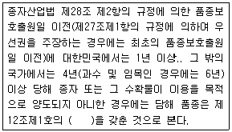

종자기사 (2010-05-09 기출문제)
1과목: 종자생산학
1. 광선과 결합해야만 발아증진 효과가 있는 것은?
- Gibberellins
- Cytokinin
- Kinetin
- Ethylene
(정답률: 46%)

2. 종자의 순도분석을 통하여 알 수 있는 것은?
- 종자의 발아능력
- 종자의 수분함량
- 종자의 병해 정도
- 종자의 정립 비율
(정답률: 56%)
3. 종자생산에서 수확시기와 수확방법은 종자활력에 크게 영향을 미친다. 수확시기에 관한 설명으로 가장 적합한 것은?
- 종자의 활력이 가장 높은 형태적 성숙기보다 생리적 성숙시기에 수확한다.
- 수확시기는 식물체와 종실의 외양과 종자수분정도에 따라 결정한다.
- 수확적기의 종자 수분함량은 옥수수가 콩보다 낮다.
- 적기 수확에 벼 종자 수분함량 범위는 콩 종자의 수분함량 범위보다 좁다.
(정답률: 25%)
4. 순도검사에서 순종자로 구분되지 않는 것은?
- 쭈그러진 종자
- 이종종자
- 이병종자
- 발아종자
(정답률: 57%)
5. 피토크롬을 가장 잘 설명한 것은?(오류 신고가 접수된 문제입니다. 반드시 정답과 해설을 확인하시기 바랍니다.)
- 개화를 촉진하는 호르몬이다.
- 광을 수용하는 색소 단백질이다.
- 광합성에 관여하는 색소 중의 하나이다.
- 호흡조절에 관여하는 단백질이다.
(정답률: 5%)
6. 기본식물, 원원종, 원종 및 F1종자를 인공교배에 의하여 증식.생산하고 있는 작물이 아닌 것은?
- 오이
- 호박
- 수박
- 콩
(정답률: 55%)
7. 표준발아검사시 치상하는 종자수를 바르게 나타낸 것은?
- 50립씩 2반복
- 50립씩 3반복
- 100립씩 2반복
- 100립씩 4반복
(정답률: 79%)
8. 종자를 수확하여 건조시키고자 한다. 작물마다 종자의 수분상태에 따른 안전 건조온도 범위가 다른데, 맥류의 경우 종자의 최초수분함량이 30% 일 때 적정건조온도는?(오류 신고가 접수된 문제입니다. 반드시 정답과 해설을 확인하시기 바랍니다.)
- 43도
- 47도
- 52도
- 67도
(정답률: 38%)
9. 광발아종자에서 발아 중 Pfr 의 생리적 역할에 관여하는 기작이 아닌 것은?
- Gibberellin의 합성에 관여한다.
- 특수한 유전자에 있어서 선택적 활동을 한다
- 막투과성을 바꾼다.
- Cytokinin의 합성에 관여한다.
(정답률: 18%)
10. 웅성불임성을 이용한 당근의 F1 채종시 암.수의 비율로 가정 적합한 것은?
- 암 : 수 = 1 : 1
- 암 : 수 = 1 : 2
- 암 : 수 = 2 : 1
- 암 : 수 = 4 : 1
(정답률: 27%)
11. 다음 중 수명이 가장 짧은 단명종자는?
- 양파
- 가지
- 벼
- 배추
(정답률: 66%)
12. 종자의 저장기간 동안 종자수명에 가장 큰 영향을 미치는 내적 요인은?
- 해충 밀도
- 종자의 수분함량
- 종자의 단백질 함량
- 잡초종자 혼입률
(정답률: 60%)
13. 테트라졸리움 종자활력검사시 사전흡수시간과 착색을 위한 TTC용액의 농도가 바르게 짝지어진 것은?(오류 신고가 접수된 문제입니다. 반드시 정답과 해설을 확인하시기 바랍니다.)
- 벼 : 9시간, 2.0%
- 보리 : 18시간, 1.0%
- 레드클로버 : 10시간, 5%
- 앨펄퍼 : 5시간, 10%
(정답률: 55%)
14. 채종포 관리에서 가장 역점을 두어야 할 항목은?
- 도복 방지
- 이형주 제거
- 병해충 방제
- 포장 청결
(정답률: 70%)
15. 경실종자의 휴면타파 방법으로 효과가 가장 낮은 것은?(오류 신고가 접수된 문제입니다. 반드시 정답과 해설을 확인하시기 바랍니다.)
- 질산칼륨 처리
- 끓는 물에 담금
- 산으로 상처내기
- 종피에 기계적 상처내기
(정답률: 46%)
16. 흰독말풀, 담배, 목화처럼 수정되지 않는 난세포가 홀로 발육하여 배를 형성하는 생식방법은.?
- 무핵란생식
- 무배생식
- 주심배생식
- 처녀생식
(정답률: 43%)
17. 종자 생산에 있어서 아포믹시스를 이용하면?
- 성전환이 용이하다
- 잡종후대에서 다양한 변이를 획득할 수 있다.
- 모체의 유전적 형질을 계속 유지할 수 있다.
- 잡종후대의 유전적 분리현상을 단축시킬 수 있다.
(정답률: 65%)
18. 배추과 채소 중 기본 염색체수가 다른 것은?
- B. pekinensis
- B. chinensis
- B. campestris
- B. oleracea
(정답률: 23%)
19. 옥신 10-2M을 만들려면 물 1L에 얼마의 옥신이 필요한가?(단, 옥신의 분자량은 175.18로 한다.)
- 1.7518g
- 17.518g
- 175.18g
- 1751.8g
(정답률: 30%)
20. 자식식물이 타가수정을 회피하는 수단은?
- 웅성불임성
- 이형예현상
- 자가불화합성
- 폐화수정
(정답률: 56%)
2과목: 식물육종학
21. 잡종강세를 이용하는데 유리한 특성과 거리가 먼 것은?
- 많은 종자의 생산
- 자가불화합성
- 웅성불임성
- 자가수분
(정답률: 44%)
22. 자식성 작물의 신품종 증식단계를 옳게 나타낸 것은?
- 기본식물-원원종-원종-보급종
- 원종-원원종-기본식물-보급종
- 원원종-보급종-원종-기본식물
- 보급종-기본식물-원종-원원종
(정답률: 74%)
23. 같은 개체에서 영양생식으로 증식된 개체군을 영양계라 한다. 영양계의 일반적인 특징으로 옳은 것은?
- 유전적 특성이 동일하다
- 이형접합이므로 품종으로 이용할 수 없다.
- 염색체 변이가 생겨 균등성 유지가 어렵다.
- 동형접합인 경우에만 품종으로 이용할 수 있다.
(정답률: 67%)
24. 자식성 작물은?
- 토마토
- 배추
- 무
- 양배추
(정답률: 60%)
25. 양성잡종에서 독립유전의 법칙이 성립되어 F2 에서의 표현형의 분리비가 9:3:3:1 이 될 수 있는 전제 조건은?(오류 신고가 접수된 문제입니다. 반드시 정답과 해설을 확인하시기 바랍니다.)
- 비대립유전자 상호작용이 있어야 한다.
- 두 개의 유전자가 동일한 염색체 상에 위치해야한다.
- 두 쌍의 대립유전자 상호작용에서 공우성이 성립되어야 한다.
- F1 식물체가 만드는 4종류의 배우자 출현비율이 같아야 한다.
(정답률: 29%)
26. 육종기술을 3단계로 구분할 때 해당되지 않는 것은?
- 변이의 탐구와 창성
- 변이의 선택과 고정
- 변종의 색출과 도태
- 신종의 증식과 보급
(정답률: 48%)
27. cDNA 유전자은행을 구축 할 때 다음 중 가장 먼저 이루어져야 할 사항은?(오류 신고가 접수된 문제입니다. 반드시 정답과 해설을 확인하시기 바랍니다.)
- 역전사효소에 의한 cDNA 합성
- cDNA 클론의 동정
- cDNA 를 운반체에 삽입
- mRNA 추출
(정답률: 15%)
28. AABBCC x aabbcc 의 F1 은 AaBbCc 이다. 세가지 유전자가 완전히 연관되었을 때 F1 이 생산하는 배우자의 유전자형 종류는?(단, 교차는 발생하지 않는다.)(오류 신고가 접수된 문제입니다. 반드시 정답과 해설을 확인하시기 바랍니다.)
- 1
- 2
- 4
- 8
(정답률: 0%)
29. 일반적으로 1 세대당 1 유전자에 일어나는 자연 돌연변이의 출현빈도는?
- 10-1
- 10-4 ~ 10-2
- 10-6 ~ 10-5
- 10-10 ~ 10-8
(정답률: 45%)
30. 형질전환을 이용한 육종에서 대상형질과 사용된 유전자의 연결로 틀린 것은?
- 제초제 저항성 : bar 유전자
- 내충성 : Bt 유전자
- 바이러스 저항성 : 외피단백질 유전자
- 내병성 : aro A 유전자
(정답률: 40%)
31. 일반조합능력의 검정법으로 가장 많이 사용하는 방법은?
- 단교잡검정법
- 톱교잡검정법
- 복교잡검정법
- 다교잡검정법
(정답률: 59%)
32. 배추 체세포의 염색체수가 20일 때, 꽃의 암술머리 세포의 염색체 수는?
- 10
- 15
- 20
- 25
(정답률: 50%)
33. 계통분리법의 하나로 선택한 개체의 종자를 2등분하여 다음해에 그 반량만 파종하여 선발하는 방법은?
- 직접법
- 순계분리법
- 성군집단선발법
- 잔수법
(정답률: 50%)
34. 배추에 피해를 주는 바이러스병에 대한 내병성 육종을 위한 분리세대의 재배포장 조건으로 가장 적합한 것은?
- 고냉지에서 자주 살충제를 살포해야 한다.
- 고냉지에서 살충제를 살포하지 않는다.
- 병 발생 지역이나 계절에 재배하며, 자주 살총제를 살포한다.
- 병 발생 지역이나 계절에 재배하며, 자주 살충제를 살포하지 않는다.
(정답률: 49%)
35. 종자증식을 위한 원종포의 설명으로 옳은 것은?(오류 신고가 접수된 문제입니다. 반드시 정답과 해설을 확인하시기 바랍니다.)
- 기본식물을 양성하는 포장이다.
- 원원종을 재배하는 포장이다.
- 원종을 재배하는 포장이다.
- 보급종을 재배하는 포장이다.
(정답률: 20%)
36. 아조변이에 대한 설명으로 가장 적합한 것은?:
- 생식세포의 돌연변이로서 영양번식 작물에 주로 이용되는 것이다.
- 체세포의 돌연변이로서 영양번식 작물에 주로 이용되는 것이다.
- 생식세포의 돌연변이로서 유성번식 작물에 주로 이용되는 것이다.
- 체세포의 돌연변이로서 유성번식 작물에 주로 이용되는 것이다.
(정답률: 43%)
37. 3염색체식물의 염색체수를 표기하는 방법으로서 옳은 것은?
- 3n
- 3n+1
- 2n-1
- 2n+1
(정답률: 53%)
38. 인간이 변이를 작성하여 육종애 이용하고 있는 행위로 가장 적합한 것은?
- 자연계에서 변이를 탐색하여 이용
- 인위돌연변이를 유발하여 이용
- 야생종에서 변이를 찾아서 이용
- 재래종에 포함된 변이를 분리하여 이용
(정답률: 40%)
39. 위수정에 대한 설명으로 옳은 것은?
- 자웅의 생식세포가 결합하는 것
- 꽃가루를 배양하여 생기는 것
- 꽃가루가 자극을 주어 난핵이 수정되지 않은 채 단독으로 배를 형성하는 것
- 핵을 읽은 난세포가 단독으로 발육하는 것
(정답률: 62%)
40. 양적형질의 표현형에 나타나는 상관관계를 의미하는 것은?
- 표현형상관
- 유전상관
- 환경상관
- 인자형상관
(정답률: 40%)
3과목: 재배원론
41. 일반적으로 작물의 생육에 적합한 토양의 삼상분초로 가장 적정한 것은?
- 고상 50%, 액상 30%, 기상 20%
- 고상 60%, 액상 15%, 기상 25%
- 고상 70%, 액상 15%, 기상 15%
- 고상 80%, 액상 15%, 기상 5%
(정답률: 55%)
42. 어느 작물의 요수량이 500이라면 단위중량 1g의 건물을 생산하는데 소비된 물의 양은?
- 0.5kg
- 5kg
- 50kg
- 500kg
(정답률: 43%)
43. 이산화탄소의 농도를 높여서 작물의 증수를 꾀하는 방법은?
- 엽면시비
- 질산시비
- 탄산시비
- 표층시비
(정답률: 45%)
44. 벼의 냉해에 대한 설명으로 틀린 것은?
- 저온에 놓이면 동화와 전류작용이 감퇴한다.
- 저온과 병해의 발생은 상관관계가 없다.
- 자포니카 벼의 장해형 냉해는 기온 17도 이하에서 나타난다.
- 작물을 저온에 순화시킴으로서 내냉성을 증가시킬 수 있다.
(정답률: 56%)
45. 농작물의 수량 극대화를 위한 수량의 삼각형에 대한 설명으로 가장 적합한 것은?
- 농작물의 수량을 최대로 올리려면 재배품종, 토양 및 재배방법의 조화가 중요하다.
- 농작물의 수량이 최대로 되려면 품종, 재배환경 및 재배기술이 동등하게 적용되어야 한다.
- 농작물읫 수량이 최대로 되려면 품종의 유전성이나 재배환경보다 알맞은 재배기술의 적용에 더 큰 비중을 두어야 한다.
- 농작물의 수량 극대화를 위해서는 재배환경이나 재배기술보다 유전성이 우수한 품종의 선택에 더 큰 비중을 두어야 한다.
(정답률: 43%)
46. 다음 중 산성토양에서 가장 결핍되기 쉬운 성분은?(오류 신고가 접수된 문제입니다. 반드시 정답과 해설을 확인하시기 바랍니다.)
- Fe
- P
- Mn
- Zn
(정답률: 15%)
47. 정지작업에 해당되지 않는 것은?
- 복토
- 작휴
- 쇄토
- 진압
(정답률: 24%)
48. 작물의 도복을 방지하기 위한 대책으로 거리가 먼 것은?
- 인삼, 칼륨, 규산의 시용량을 늘린다.
- 이니벤파이드를 처리한다.
- 질소를 추가로 시용하여 생장량을 크게 한다.
- 키가 작고, 대가 강한 품종을 선택한다.
(정답률: 57%)
49. 기지의 발생원인 중에서 시설재배시 가장 크게 문제가 되고 있는 것은?
- 연작으로 인한 토양비료분의 일방적인 수탈
- 천근성 작물의 연작으로 인한 토양물리성 약화
- 다비 연작으로 인하여 작토층에 과잉 집적되는 염류
- 동일 작물의 다비 연작으로 인한 특정 잡초의 발생과 번성
(정답률: 48%)
50. 작물의 분류법 중 작물을 재배하는데 생육적온 등 유용한 정보를 가장 많이 얻을 수 있는 분류법은?
- 식물학적 뷴류
- 일반적 분류
- 생태적 분류
- 경영적 분류
(정답률: 50%)
51. 벼 직파재배와 비교할 때 육묘 이앙재배의 장점이 아닌 것은?
- 도복경감
- 종자절약
- 용수절약
- 노력절감
(정답률: 40%)
52. 다음 중 인위적 돌연변이의 유도 효과가 가장 큰 방사선은?
- 알파선
- 베타선
- 감마선
- 델타선
(정답률: 60%)
53. 동상해의 재배적 대책으로 틀린 것은?
- 맥류는 답압을 한다.
- 채소와 화훼류는 보온재배를 한다.
- 맥류 재배에서 이랑을 세워 뿌림골을 깊게 한다.
- 맥류 재배에서 파종시기를 늦추고 추운 곳에서는 파종량을 줄인다.
(정답률: 53%)
54. 추락현상과 관계가 먼 것은?
- 철부족
- 수량감소
- 벼 도열병의 발생
- 황화수소에 의한 벼 뿌리의 손상
(정답률: 30%)
55. 작물의 내적 균형의 지표로 흔히 사용되는 것은?
- G-D balance
- LAD(Leaf area density)
- GOD(Growing degree day)
- RQ(Respiratory quotient)
(정답률: 57%)
56. 1m2 의 현미 무게가 1kg이고 이때 현미의 수분함량이 17%이다. 수분함량이 15%일 때 10a의 현미수량은?
- 약 293kg
- 약 488kg
- 약 512kg
- 약 976kg
(정답률: 32%)
57. 채소류 육묘시 인공상토 사용의 유리한 점이 아닌 것은?
- 병과 잡초관리에 유리하다.
- 사용 후 재활용이 매우 용이하다.
- 같은 품질의 상토를 계속 만들 수 있다.
- 일반 토양보다 빨리 자라게 할 수 있는 양분을 첨가할 수 있다.
(정답률: 48%)
58. 방사성 동위원소의 농업적 이용에 있어 방서선의 어떤면을 가장 많이 이용하는 가?
- 이온화작용
- 사진작용
- 형광작용
- 맹아발육촉진
(정답률: 20%)
59. 단명종자로만 나열된 것은?
- 메밀, 고추, 양파, 토당귀
- 벼, 쌀보리, 완두, 콩
- 오이, 가지 , 배추, 녹두
- 벼, 오이, 고추, 양파
(정답률: 32%)
60. 다음 중 벼의 지상부에 대한 지하부의 건물중 비율이 가장 높은 시기는?
- 분얼초기
- 신장기
- 출수기
- 등숙기
(정답률: 27%)
4과목: 식물보호학
61. 벼의 도복형질과 관련된 설명으로 틀린 것은?
- 초장이 짧을수록 도복에 강하다
- 재식밀도가 높을수록 도복에 강하다
- 하위 절간장이 짧을수록 도복에 강하다
- 줄기의 굵기가 굵을수록 도복에 강하다.
(정답률: 39%)
62. 다음 설명하는 해충은?(오류 신고가 접수된 문제입니다. 반드시 정답과 해설을 확인하시기 바랍니다.)

- 배나무이
- 배나무방패벌레
- 콩가루벌레
- 배나무흰깍지벌레
(정답률: 10%)
63. 25%농도의 유제를 1000배로 희석해서 10a당 200L를 살포하여 해충을 방제하려고 할 때의 유제의 소요량은?(오류 신고가 접수된 문제입니다. 반드시 정답과 해설을 확인하시기 바랍니다.)
- 100ml
- 200ml
- 300ml
- 400ml
(정답률: 0%)
64. 약독계통의 바이러스를 이용하여 같은 종류의 강독계통 바이러스 감염을 줄이는 것을 무엇이라 하는가?(오류 신고가 접수된 문제입니다. 반드시 정답과 해설을 확인하시기 바랍니다.)
- 검역
- 유충
- 번데기
- 성충
(정답률: 13%)
65. 솔잎혹파리의 월동태로 가장 적당한 것은?
- 알
- 유충
- 번데기
- 성충
(정답률: 10%)
66. 병원체가 기주 식물체 내로 들어가는 침입장소 중 자연개구부가 아닌 것은?
- 각피
- 밀선
- 피복
- 수공
(정답률: 35%)
67. 매개충과 관련 식물바이러스병의 연결로 틀린 것은?(오류 신고가 접수된 문제입니다. 반드시 정답과 해설을 확인하시기 바랍니다.)
- 애멸구- 벼 줄무늬잎마름병
- 끝동매미충 – 벼 오갈병
- 복숭아촉진딧물 – 감자 잎말림병
- 번개매미충 - 대추나무 빗자루병
(정답률: 17%)
68. 발생심도가 매우 깊어 출아 시 15-60일 정도로 출아폭이 길고 불균일하기 때문에 방제가 어려운 잡초는?(오류 신고가 접수된 문제입니다. 반드시 정답과 해설을 확인하시기 바랍니다.)
- 올미
- 벗풀
- 올방개
- 너도방동사니
(정답률: 14%)
69. 완전변태를 하는 목은?
- 메뚜기목
- 나비목
- 총채벌레목
- 노린재목
(정답률: 50%)
70. 유충이 솔잎 기부에 충영을 형성하고 그 안에서 흡즙함으로서 피홰를 입은 솔잎의 생장을 저해시키고, 피해가 수년간 계속되어 피해목을 고사시키는 해충은?(오류 신고가 접수된 문제입니다. 반드시 정답과 해설을 확인하시기 바랍니다.)
- 소나무재선충
- 솔잎혹파리
- 솔나방
- 솔껍질깍지벌레
(정답률: 6%)
71. 각종 피해원인에 대한 작물의 피해를 직접피해, 간접피해 및 후속피해로 분류할 때, 다음 중 간접적인 피해에 해당하는 것은?(오류 신고가 접수된 문제입니다. 반드시 정답과 해설을 확인하시기 바랍니다.)
- 수확물의 양적 감소
- 수확물의 질적 저하
- 수확의 어려움
- 2차적 병원체에 대한 식물의 감수성 증가
(정답률: 39%)
72. 연작에 의한 병해를 경감시키는 방법으로 가장 바람직한 것은?
- 석회의 시용
- 유기물의 시용
- 윤작
- 병든 식물제거
(정답률: 50%)
73. 종자 또는 지하경으로 번식하는 잡초는?
- 광대나물
- 들깨풀
- 개여뀌
- 너도방동사니
(정답률: 30%)
74. 병원체 변이의 기작이 아닌 것은?
- 이핵 현상
- 준유성생식
- 이수체 형성 일맥현상
- 일액현상
(정답률: 48%)
75. 잡초의 발생 시기에 따른 분류에서 여름형 잡초는?
- 냉이
- 벼룩나물
- 속속이풀
- 개여뀌
(정답률: 31%)
76. 고형 시용제인 것은?
- 수용제
- 수화제
- 유제
- 입제
(정답률: 50%)
77. 유기인계 살균제에 해당되지 않는 것은?
- Ptrazophos
- Iprobenfos
- Fosetyl-Al
- Metalaxyl
(정답률: 15%)
78. Pseudomomas에 의해서 유발되는 병이 아닌 것은?
- 양송이버섯 갈색무늬병
- 뽕나무 세균성 오갈병
- 배나무 화상병
- 담배 들불병
(정답률: 17%)
79. 작물에 대한 잡초의 피해 요인이 아닌 것은?
- 작물에 기생하여 직접적으로 영양분을 탈취한다.
- 작물이 필요한 영양분과 생육환경에 경쟁한다.
- 작물에 발생하는 병해충의 종간기주로 작용한다.
- 작물이 생육하는데 중요한 토양습도를 상승시킨다.
(정답률: 58%)
80. 농약의 구비조건으로 틀린 것은?
- 약효가 확실할 것
- 약해가 없을 것
- 금성, 만성 독성이 낮을 것
- 다른 약제와 혼용 범위가 좁을 것
(정답률: 61%)
5과목: 종자관련법규
81. 농협에서 감자 보급종을 생산하려고 한다. 포장검사는 몇회 실시하여야 하는가?(단, 춘작,추작 중 한가지의 경우만 해당한다.)
- 1회
- 2회
- 3회
- 4회
(정답률: 32%)
82. 종자검사시 시료추출용 균분기가 아닌 것은?(오류 신고가 접수된 문제입니다. 반드시 정답과 해설을 확인하시기 바랍니다.)
- 코니칼 균분기
- 토양 균분기
- 원심분리형 균분기
- 원판형 균분기
(정답률: 52%)
83. 국가보증을 받을 것으로 인정하는 국제종자검정기관으로 맞지 않는 것은?
- ISTA
- AOSA
- UPOV
- 기타 농림수산식품부장관이 정하여 고시하는 외국의 종자 검정기관
(정답률: 34%)
84. 농림수산식품부장관이 정하는 작물의 종자로서 국내에 처음으로 수입되는 품종의 종자를 판매하기 위하여 수입하는 당해 품종의 종자에 대하여 수입적응성 시험을 받지 아니하고 종자를 수입한 자를 처벌할 수 있는 벌칙기준은?
- 2년 이하의 징역 또는 2천만원 이하의 벌금에 처한다.
- 2년 이하의 징역 또는 1천만원 이하의 벌금에 처한다.
- 1년 이하의 징역 또는 1천만원 이하의 벌금에 처한다.
- 1년 이하의 징역 또는 2천만원 이하의 벌금에 처한다.
(정답률: 7%)
85. 관련 규정에 의하여 종자시료를 보관.관리하여야 하는 경우가 아닌 것은?(단, 영양체 종자인 경우는 제외한다)
- 품종보호를 출원한 품종의 종자
- 품종보호권이 설정 등록된 품종의 종자
- 품종목록에 등재된 품종의 종자
- 생산.판매 신고된 품종의 종자
(정답률: 43%)
86. 종자산업법에서 규정하고 있는 종자의 정의로 맞는 것은?
- 증식용 또는 재배용으로 쓰이는 씨앗을 말한다.
- 증식용 또는 재배용으로 쓰이는 씨앗.버섯종균 또는 영양체를 말한다.
- 증식용 또는 재배용으로 쓰이는 씨앗과 영양체를 말한다.
- 증식용 또는 재배용으로 쓰이는 씨앗과 버섯종균을 말한다.
(정답률: 58%)
87. 타인의 품종보호권을 침해한 자에 대한 벌칙기준으로 옳은 것은?(관련 규정 개정전 문제로 여기서는 기존 정답인 2번을 누르면 정답 처리됩니다. 자세한 내용은 해설을 참고하세요.)
- 5년 이하의 징역이나 2천만원 이하의 벌금
- 5년 이하의 징역이나 3천만원 이하의 벌금
- 1년 이하의 징역이나 1천만원 이하의 벌금
- 3년 이하의 징역이나 2천만원 이하의 벌금
(정답률: 24%)
88. 품종성능심사기준에서 재배시험지역에 대한 설명으로 틀린 것은?
- 최소한 2개 지역 이상 실시한다.(단, 작물 및 품종의 특성에 따라 지역수를 가감할 수있다.)
- 품종의 주 재배지역은 반드시 포함되어야 한다.
- 매년 지역을 바꾸어가며 실시한다.
- 작물의 생태형 또는 용도에 따라 지역을 결정한다.
(정답률: 15%)
89. 다음 중 버섯의 종자보증 유효기간으로 맞는 것은?
- 15일
- 1개월
- 2개월
- 3개월
(정답률: 35%)
90. 다음 중 품종보호에 관한 설명으로 맞는 것은?
- 품종보호를 받을 수 있는 권리는 이를 이전할 수 있다.
- 품종보호를 받을 수 있는 권리는 질권의 목적으로 할 수 없다.
- 품종보호를 받을 수 있는 권리가 공유인 경우에는 각 공유자는 다른 공유자의 동의 없이 그 지분을 양도할 수 있다.
- 품종보호출원전에 당해 품종에 대하여 품종보호를 받을 수 있는 권리를 승계한 자는 그 품종보호의 출원을 하지 아니하는 경우에는 제 3자에게 대항할 수 없다.
(정답률: 22%)
91. 다음 중 종자산업법에서 정한 보증표시 사항이 아닌 것은?(단, 채종단계별 구분을 요하는 종자를 대상으로 한다.)
- 발아율
- 생산년도
- 이품종별
- 품종명
(정답률: 43%)
92. 품종보호 통상실시권의 등록의 효력 중 틀린 설명은?
- 통상실시권을 등록한 때에는 그 등록 후에 품종보호권 또는 전용실시권을 취득한 자에 대하여도 그 효력이 발생한다.
- 선사용에 의한 통상실시권은 등록이 있어야만 제 75조 1항의 효력이 발생한다.
- 통상실시권의 이전을 목적으로 하는 질권의 설정은 등록 하지 아니하면 제3자에게 대항 할 수 없다.
- 통상실시권의 소멸을 목적으로 하는 질권의 이전은 이를 등록하지 아니하면 제3자에게 대항 할 수 없다.
(정답률: 13%)
93. 갑은 감정인으로서 품종보호 심판위원회에 대하여 허위 감정을 하였다. 종자산업법상 해당되는 죄는?
- 비밀누설의 죄
- 침해죄
- 허위표시의 죄
- 위증죄
(정답률: 56%)
94. 국가품종목록등재의 유효기간으로 옳은 것은?
- 등재신청일로부터 10년간까지 이다.
- 등재공고일로부터 10년까지 이다.
- 등재일로부터 20년까지 이다.
- 등재일의 다음 해로부터 10년까지 이다.
(정답률: 32%)
95. 일정한 수량 이하의 종자에 대한 수출입 신고가 면제되는 기관이 아닌 것은?
- 농업계의 대학 및 전문대학
- 국가나 지방자치단체의 시험.연구기관
- 정부출연기관 및 정부출자기관의 시험.연구기관
- 조경공사를 맡은 건설업체의 시험.연구기관
(정답률: 43%)
96. 국가품종목록에 등재하는 절차를 바르게 설명한 것은?
- 등재신청-공개-심사-공고-등재
- 등재신청-심사-등재-공고
- 등재신청-심사-공고-등재
- 등재신청-공고-심사-등재
(정답률: 24%)
97. 농림수산식품부령이 정하는 자가 시험 또는 연구목적으로 종자를 수출 또는 수입하는 경우에 그 신고가 면제되는 종자의 수량 기준으로 맞는 것은?
- 벼 :5kg
- 보리 :10 kg
- 콩 : 15kg
- 감자 :60 kg
(정답률: 24%)
98. 다음 ( )안에 적합한 용어는?

- 신규성
- 균일성
- 구별성
- 안정성
(정답률: 25%)
99. 품종보호 등록출원을 위한 품종에 대한 심사에 대해 설명한 것으로 맞지 않는 것은?
- 심사는 심사관에 의해 이루어진다.
- 심사는 서류심사와 재배심사로 나누어 실시한다.
- 심사관이 필요하다고 인정하는 경우에는 재배심사를 하지 아니할 수 있다.
- 서류심사는 신규성과 구별성을 심사하고 재배심사는 균일성 및 안정성을 심사하기 위해 실시한다.
(정답률: 13%)
100. 다음 중 종자산업법상 “실시”에 해당되지 않는 행위는?
- 보호품종의 종자를 증식하는 행위
- 보호품종의 종자를 조제하는 행위
- 보호품종의 종자를 수입하는 행위
- 보호품종의 종자를 연구하는 행위
(정답률: 37%)